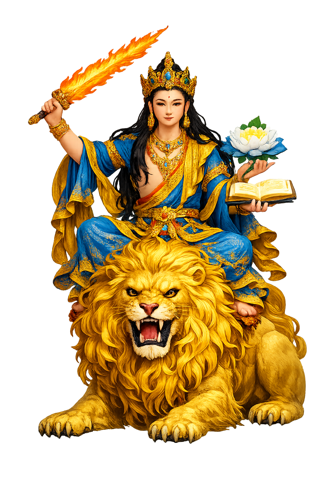

The Authentic Orthography
Wisdom, Intellect · The Gentle Glory · Sword of Wisdom

Unicode restoration and ASCII comparison
मञ्जुश्री
The name in its original Buddhist form. Mañjuśrī (मञ्जुश्री) is attested in the source tradition — “Gentle glory”. Its macron-length vowels, nasal retroflexes, and palatal/retroflex sibilants carry the full phonetic and orthographic weight of the source tradition.
manjushri
Reduced to plain manjushri, the name loses everything that made it specific: macron-length vowels, nasal retroflexes, and palatal/retroflex sibilants. What remains is an ASCII string that machines can parse but that no longer speaks with its original voice.
Mañjuśrī
The Unicode restoration recovers what ASCII flattened. Mañjuśrī restores macron-length vowels, nasal retroflexes, and palatal/retroflex sibilants, returning the name to its original written dignity. The domain encodes to Punycode, but the browser displays the truth.
Mañjuśrī.com → xn--majur-pta32bwm.com
The non-ASCII characters in Mañjuśrī are encoded while the ASCII remains visible. To the DNS, it is Punycode. To humanity, it is Mañjuśrī.
How Mañjuśrī travels from ancient script to the modern URL
How Mañjuśrī was spoken
The Flaming Sword, the Book on the Lotus, and the Mountain of Five Terraces
Mañjuśrī is the bodhisattva of transcendent wisdom: the ever-youthful prince who raises the flaming sword that cuts ignorance and bears the book of the Perfection of Wisdom on a blue lotus — the mind of every Buddha made visible as a sixteen-year-old with a blade.
The khadga that does not wound but severs: ignorance cut at the root, wisdom flaming at the edge.
The Prajñāpāramitā volume resting on a blue utpala — the text the sword serves.
He rides the lion of the teaching — wisdom's roar that no argument withstands.
Oṃ A Ra Pa Tsa Na Dhīḥ — the Arapacana syllabary as mantra, recited for a sharp mind.
Stories of Mañjuśrī
Mañjuśrī's mythology is the biography of wisdom itself: he appears wherever the sūtras need the hardest question asked — and answered without a flicker.
When the layman Vimalakīrti feigned illness to teach, every bodhisattva found an excuse not to visit — each remembered being corrected by him once. Mañjuśrī alone went, leading the whole assembly, and their exchange is the sūtra's summit: asked how a bodhisattva enters non-duality, Vimalakīrti answered Mañjuśrī's courtesy with silence, and Mañjuśrī pronounced the silence itself the teaching. It is the most famous consultation in Buddhist literature — the wisdom bodhisattva certifying that the highest truth declines to be phrased.
In the Lotus Sūtra's twelfth chapter, Mañjuśrī returns from the nāga palace under the sea and reports that the dragon king's daughter — eight years old — has attained full awakening. The elder Śāriputra objects on every ground the age could supply; the girl appears, offers a jewel to the Buddha, and demonstrates her enlightenment before the assembly. The chapter is Mañjuśrī's brief for the universality of awakening: wisdom, taught well, does not check credentials.
Nepal's own scripture, the Svayambhū Purāṇa, makes him the valley's founder: when the Kathmandu basin was a serpent lake, Mañjuśrī came from the five-peaked mountain of the north, saw the self-existent flame — the svayambhū — floating on the waters, and with one stroke of his sword cut the gorge at Chobhar so the lake drained and people could settle. The flame remained on its hill as the Svayambhū stūpa, the valley's crown to this day. It is his iconography read as geography: the sword that opens a way for beings to live.
The Avataṃsaka Sūtra names his earthly dwelling: a mountain in the northeast called Clear-and-Cool, where he teaches amid ten thousand bodhisattvas. Chinese Buddhists identified the peak with Wǔtái shān, the five-terraced mountain of Shanxi, and made it East Asia's greatest bodhisattva pilgrimage: Tibetan lamas, Mongol khans, and Chinese emperors all climbed the terraces to meet him. Pilgrims still watch the mountain's famous halo-lights for his lion — and the mountain still answers to his name.
Mañjuśrī is the proof that clarity is a form of compassion: the sword is raised not against persons but against the fog that makes persons suffer. His youth is the point — wisdom is not the slow deposit of years but the freshness of a mind that has not agreed to be confused. He asks of every learner the one question his book and blade pose together: what are you willing to have cut, so that what remains can finally be read?
Enter Extended Lore